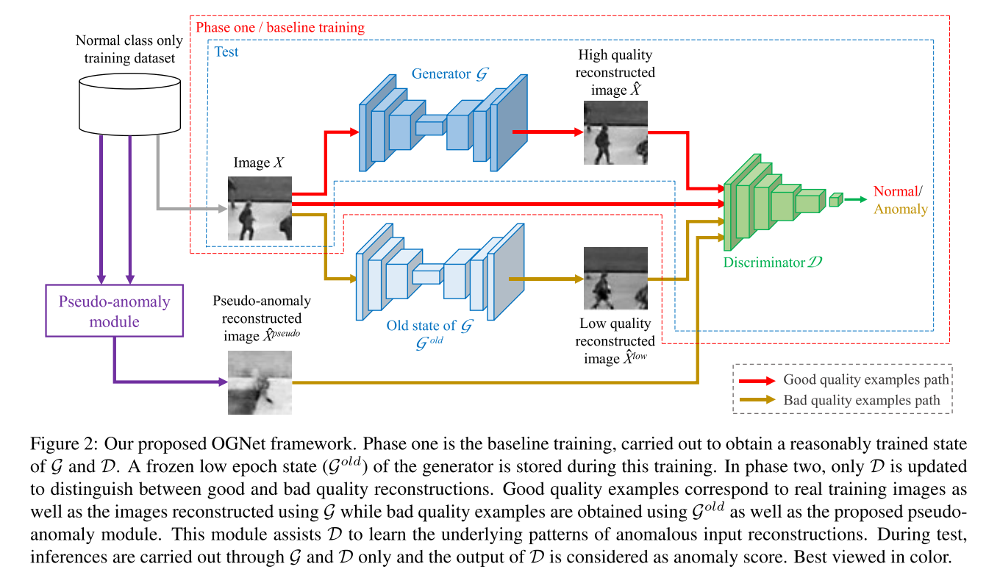
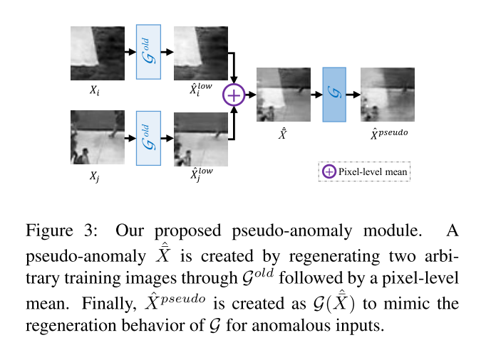
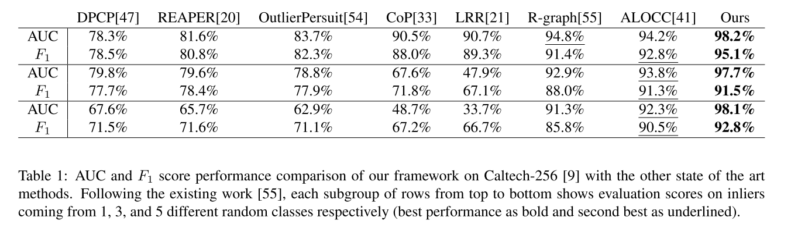
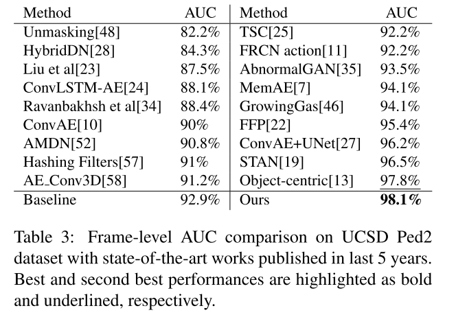
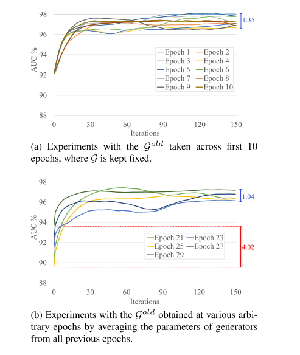

1. どんなもの？
- 2stage のtrainingのAnomaly Detection
- 完ぺきではないGenerator $\mathcal{G}_{old}$が1st stage，そこからgood/bad 判定のDiscriminatorの学習を行う
- GAN系のADモデル特有の精度不安定が解消
2. 先行研究と比べてどこがすごい？
- Generatorのみを使うADモデル（Autoencoder含む）は訓練データに稀に異常が入っていると失敗する
- Generator + DiscriminatorのADモデルは精度が不安定
- $\mathcal{G}_{old}$は↑2つを改善したモデル
3. 技術や手法の"キモ"はどこ？

- 変数の定義
- $X \sim p_t$ : 正常データ
- $\tilde{X} \sim p_t +\mathcal{N}_\sigma$ : 正常データ + ノイズ
- $\mathcal{G}$ : Generator (Autoencoder)
- $\mathcal{D}$ : Discriminator
1st phase
- GAN + DAE (Reconstruction) lossで$G$と$D$を訓練
$$ \min _ {\mathcal{G}} \max _ {\mathcal{D}}\left(\mathbb{E} _ {X \sim p_{t}}[\log (1-\mathcal{D}(X))] + \mathbb{E} _ {\tilde{X} \sim p _ {t}+\mathcal{N} _ {\sigma}}[\log (\mathcal{D}(\mathcal{G}(\tilde{X})))]\right) $$
$$ \mathcal{L}_R = | X - \mathcal{G}(\tilde{X}) |^2 $$
$$ \mathcal{L} = \mathcal{L}_{\mathcal{G}+\mathcal{D}} + \lambda \mathcal{L}_R $$
- ここで 数Epoch後（low-epoch generator ） のweightsを保存しておく．=> $\mathcal{G}_{old}$
- この段階でDiscriminatorの役割は real / fake の判定
2nd phase
Good / Bad quality exmaples
- Good quality examples : 正常データ $X$
- Bad quality examples : ${G} _ {old}$ による生成データ $\mathcal{G}_{old}(X)$ と Pseudo anomaly $\mathcal{G}(\hat{\bar{X}})$
$$ \hat{X}=\frac{\mathcal{G}^{old}\left(X_{i}\right)+\mathcal{G}^{\text {old}}\left(X _ {j}\right)}{2}=\frac{\hat{X} _ {i}^{\text {low}}+\hat{X} _ {j}^{\text {low}}}{2}, \text { where } i \neq j $$

training
- $\mathcal{D}$のみ最適化
$$ \begin{array}{l} \max _ {\mathcal{D}}\left(\alpha \mathbb{E} _ {X}[\log (1-\mathcal{D}(X))]+\right. \\ (1-\alpha) \mathbb{E} _ {\hat{X}}[\log (1-\mathcal{D}(\hat{X}))]+\beta \mathbb{E} _ {\hat{X}^{l o w}}\left[\log \left(\mathcal{D}\left(\hat{X}^{low}\right)\right)\right]+ \\ \left.\quad(1-\beta) \mathbb{E}_{\hat{X}^{pseudo}}\left[\log \left(\mathcal{D}\left(\hat{X}^{pseudo}\right)\right)\right]\right) \end{array} $$
異常度の算出
- 2nd phaseでGood / Bad quality exmaplesの識別ができる$\mathcal{D}$が得られるので，
$$ OCC = \begin{cases} \text { normal class } & \text { if } \mathcal{D}(\mathcal{G}(X))<\tau \\ \text { anomaly class } & \text { otherwise. } \end{cases} $$
4. どうやって有効だと検証した？
-
Caltech-256で実験 
-
Ped2で実験 
-
何Epoch目で$mathcal{G}_{old}$作ればよいか実験 ⇒ 結構ロバスト 
-
Caltech と Ped2のGood / Bad quality exmaples

5. 議論はあるか？
- $\mathcal{G}_{old}$のネーミングセンス良き
- MVTec ADではどうなる？